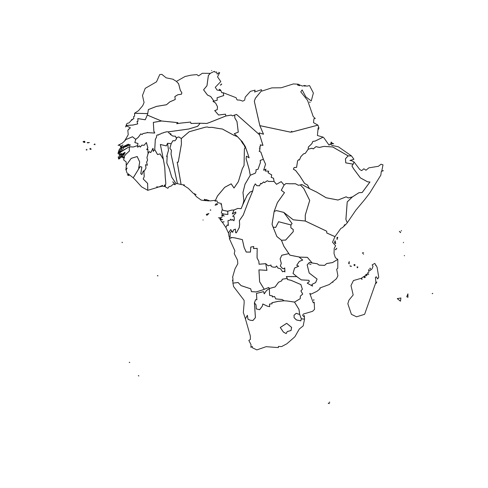

Very basic map
A cartogram is a map in which the geometry of regions is distorted in order to convey the information of an alternate variable. In this post, we are going to draw a map of Africa where the size of each country is distorted proportionally to its population.
First of all, you need to understand what a geospatial object is, and
how to plot it with R. See the background map section of the gallery!
Let’s get a geospatial object from a shape file available here. This step is extensively described in this post in case you’re not familiar with it.
We can plot the boundaries using the plot()
function:

# Get the shape file of Africa, see how on
# https://r-graph-gallery.com/168-load-a-shape-file-into-r.html
# I stored the data on a DATA folder and read it from there
library(sf)
wrld_simpl <- read_sf("DATA/world_shape_file/TM_WORLD_BORDERS_SIMPL-0.3.shp")
afr <- wrld_simpl[wrld_simpl$REGION == 2, ]
# We can visualize the region's boundaries with the plot function
plot(st_geometry(afr))Distort country size with cartogram
The geospatial object has several information for each region. It notably gives the population of each country in 2005.
We can thus use the cartogram library to distort the
size of each country, proportionally to this column. The new geospatial
object we get can be draw with the same plot function!
See how Nigeria is now bigger?

# We work with the cartogram library
library(cartogram)
# construct a cartogram using the population in 2005
# need first to "change" the projection to Mercator (AKA Google Maps): EPSG: 3857
afr_merc <- st_transform(afr, 3857)
afr_cartogram <- cartogram_cont(afr_merc, "POP2005", itermax = 5)
# And back to the previous projection
afr_cartogram <- st_transform(afr_cartogram, st_crs(afr))
# This is a new geospatial object, we can visualise it!
plot(st_geometry(afr_cartogram))Cartogram and choropleth
Cartogram are very often used in combination with choropleth map. Since we have a spatial object and a numeric value associated with each region, it is possible to color each region according to its value.
Let’s use ggplot2 to add some color, title, legend, background and so on. We now have a nice cartogram choropleth map of Africa!

# It is a new geospatial object: we can use all the usual techniques on it! Let's start with a basic ggplot2 choropleth map:
library(tidyverse)
ggplot(afr_cartogram) +
geom_sf(aes(fill = POP2005), linewidth = 0, alpha = 0.9) +
theme_void()Make it pretty
Same thing with a tiny bit of customization. See more explanation in the choropleth an ggplot2 sections.

# As seen before, we can do better with a bit of customization
ggplot(afr_cartogram) +
geom_sf(aes(fill = POP2005 / 1000000), linewidth = 0, alpha = 0.9) +
theme_void() +
scale_fill_viridis_c(
name = "Population (M)",
breaks = c(1, 50, 100, 140),
guide = guide_legend(
keyheight = unit(3, units = "mm"),
keywidth = unit(12, units = "mm"),
label.position = "bottom",
title.position = "top", nrow = 1
)
) +
labs(title = "Africa 2005 Population") +
theme(
text = element_text(color = "#22211d"),
plot.background = element_rect(fill = "#f5f5f4", color = NA),
panel.background = element_rect(fill = "#f5f5f4", color = NA),
legend.background = element_rect(fill = "#f5f5f4", color = NA),
plot.title = element_text(
size = 22, hjust = 0.5,
color = "#4e4d47",
margin = margin(
b = -0.1, t = 0.4, l = 2,
unit = "cm"
)
),
legend.position = c(0.2, 0.26)
)